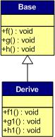
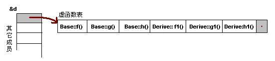

单继承
带虚函数的类
已经知道，如果一个类中有虚函数那么编译器会给这个类创建一个虚函数表。更进一步，这个类的每个实例的首地址开始4个字节存放着指向该虚函数表的指针。
下面，用代码进行验证：
class Base {
public:
int i_a;
virtual void f() { cout << "Base::f" << endl; }
virtual void g() { cout << "Base::g" << endl; }
virtual void h() { cout << "Base::h" << endl; }
};
typedef void(*Fun)(void);
int main()
{
Base b;
b.i_a = 10;
Fun pFun = NULL;
cout << "虚函数表地址：" << (int*)(&b) << endl;
cout << "虚函数表 — 第一个函数地址：" << (int*)*(int*)(&b) << endl;
// Invoke the first virtual function
pFun = (Fun)*((int*)*(int*)(&b));
pFun();
int *p_i = (int*)(&b)+1;
cout << *p_i << endl;
return 0;
}
// output
虚函数表地址：0xffd77ef8
虚函数表 — 第一个函数地址：0x80489e8
Base::f // 输出的内容确实是第一个虚函数的内容
10 // 输出了对象`b`的成员`i_a`上面这个代码，如果能理解那对指针已经有一定掌握了。
(int*)&b这里类似于int *p = （int*)&b，那么*p = *(int*)&b就表示得到了对象b前4个字节的数字，也就是虚函数表的首地址。
那么调用Base::g()的代码则为：(Fun)*((int*)*(int*)(&b)+1)。
由上面可以得到对象b的内存布局为：

无虚函数覆盖的单继承
假如有如下的继承关系：

那么，对于实例：Derive d虚函数表如下：

可以发现以下两点：
- 虚函数按照其声明顺序放于表中
- 父类的虚函数在子类的虚函数前面
那知道为什么要这么做么？想清楚 ^_^
另外，如果基类和子类都有有成员变量，应该在放在图中哪个位置？
有虚函数覆盖的单继承
既然定义了虚函数，自然是用来覆盖的，不然就没有意义了啊。况且还有纯虚函数（那样这个类就是抽象类了）。假设有如下的继承关系：

在上面的设计中，只覆盖了父类的一个函数：f()。那么对于派生类的实例，它的内存布局是这样的：

那么，按照下面的程序运行时就实现了多态！
Base *b = new Derive();
b->f();本GitBook挖的坑，后面都有填。。。